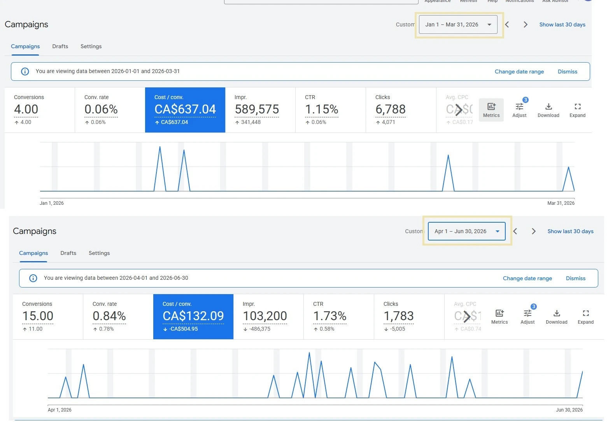
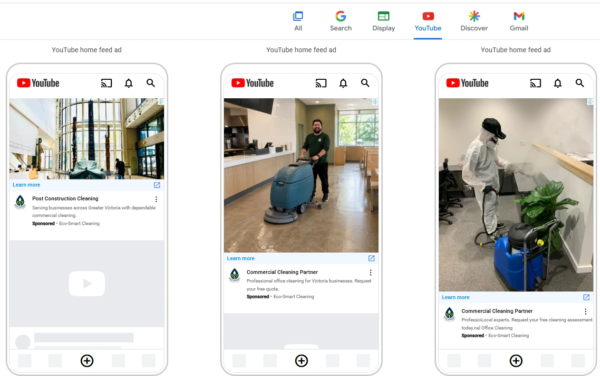

EcoSmart Commercial Cleaning
Une entreprise locale de nettoyage commercial concurrençant des chaînes nationales, dépendant entièrement d'un seul canal payé dont la performance commençait à baisser, sans présence constante ailleurs.
Défi et Objectif
L'entreprise faisait face à une baisse de prospects qualifiés et à des campagnes peu performantes, tout en ayant besoin que sa différenciation de service et sa proposition de valeur soient clairement reflétées dans ses publicités.
Mon Rôle
Plutôt que de simplement ajuster le compte Google Ads existant, j'ai proposé de renforcer les campagnes à fort potentiel en diversifiant les publicités, les publications et le contenu numérique, appuyé par un calendrier de publication organisé autour d'objectifs clairs et prédéterminés.
Exécution
J'ai restructuré le ciblage des mots-clés et les textes publicitaires, mis en place une nouvelle analyse de mots-clés et un filtrage par emplacement pour les publicités, et créé des visuels supplémentaires. J'ai également proposé de diversifier au-delà de la recherche en programmant des publications régulières sur d'autres plateformes sociales (Meta).
Résultats
Sur une période de trois mois, j'ai considérablement amélioré la performance de Google Ads : le taux de conversion a augmenté de 14×, le coût par conversion a baissé de 79 %, le CTR a augmenté de 50 % et les coûts mensuels ont baissé de 22 %. Les visites depuis Meta ont augmenté de 119 %. Les campagnes étaient concentrées uniquement sur 12 quartiers de Victoria, en Colombie-Britannique.
Google Ads plus élevé
coût par conversion
du CTR


Apprentissages
Cela a confirmé que, malgré le ciblage d'une zone géographique limitée et d'un service spécialisé, la diversification des canaux de publication et un bon filtrage des mots-clés ont permis de générer des conversions et des interactions d'une réelle valeur pour l'entreprise.